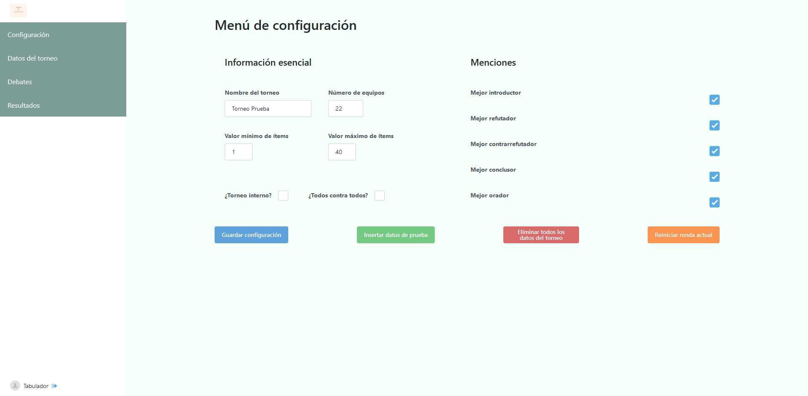

Primeros pasos
Solicitar la creación del torneo
Tabademic no require de ningún tipo de instalación, ya que toda su funcionalidad se encuentra disponible en la web. Sin embargo, cada torneo debe de ser creado de antemano por el desarrollador del programa. Sus datos de contacto los puedes encontrar en la sección desarrollador.
Una vez creado el torneo, recibirás la URL del torneo, un usuario y una contraseña, con los que podrás comenzar a utilizar Tabademic sin ningún tipo de conocimientos técnicos.
⚠️ El usuario previamente mencionado tiene rol de tabulador , el cual tiene acceso de lectura/escritura a absolutamente todos los datos del torneo. Asegúrate por favor de no compartir la contraseña con nadie. En caso de una brecha de seguridad, contacta inmediatamente con el desarollador.
Iniciar sesión 🔑
Una vez le des click a la URL del torneo, aparecerá la siguiente página de login.

Simplemente debes iniciar sesión con el usuario y contraseña obtenidos en el paso anterior. Después de ello, serás redirigido a la página de configuración.
Configurar el torneo ⚙️
Tabademic cuenta con diversas opciones de configuración, de tal forma que pueda adaptarse a diferentes tipos de torneos.
En ella, podremos configurar los siguientes aspectos del torneo:
El nombre
El número de equipos
Valor mínimo y máximo de ítems
Qué menciones de oradores se tendrán en cuenta
¿Es un torneo interno?
¿Es un sistema todos contra todos?
Además, en la parte inferior de la página se encuentran los siguientes botones:
Guardar cambios -> Guarda la configuración.
Insertar datos de prueba –> Pensada para jugar con la aplicación sin tener que haber insertado previamente los datos reales del torneo.
Eliminar todos los datos del torneo –> Muy útil queremos eliminar los datos de prueba y comenzar a insertar datos reales.
Reiniciar ronda actual –> Elimina todos los debates de la ronda actual y decrece en 1 la ronda actual. Suele emplearse en caso de que se haya generado una ronda de manera incorrecta, de tal forma que se pueda generar nuevamente.
⚠️ Pulsar en reitaradas ocasiones el botón de reiniciar ronda actual hará que se vayan eliminando una ronda tras otra del torneo. Utilizar con sumo cuidado.
